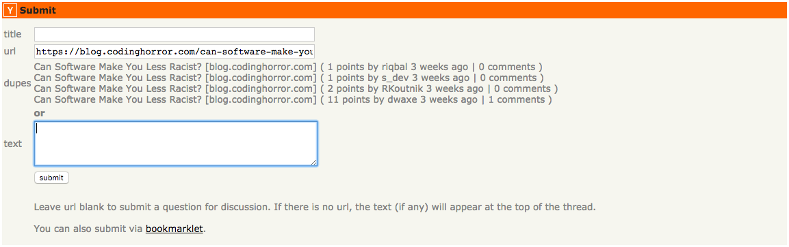

A user script to check for duplicate submissions on Hacker News
View the Project on GitHub ahemphill/hacker-news-duplicate-checker

This userscript queries the API at https://hn.algolia.com/api and displays the five most recent similar* URLs submitted to Hacker News within the past year.